DRC / LVS / PEX 完整驗證流程
Lab9 的核心是：layout 不只要畫出來，還要證明它製程規則正確、電路連接正確，並抽出寄生參數。
一、Layout 畫圖重點
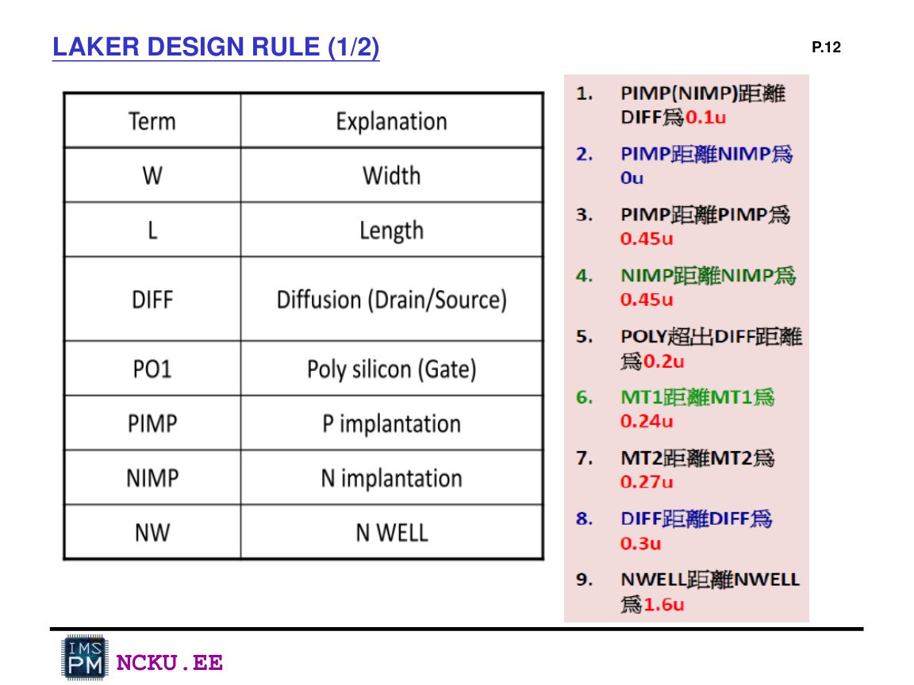
Design rule 表：例如 PIMP / NIMP / PO1 / DIFF / MT1 等最小間距與覆蓋規則。
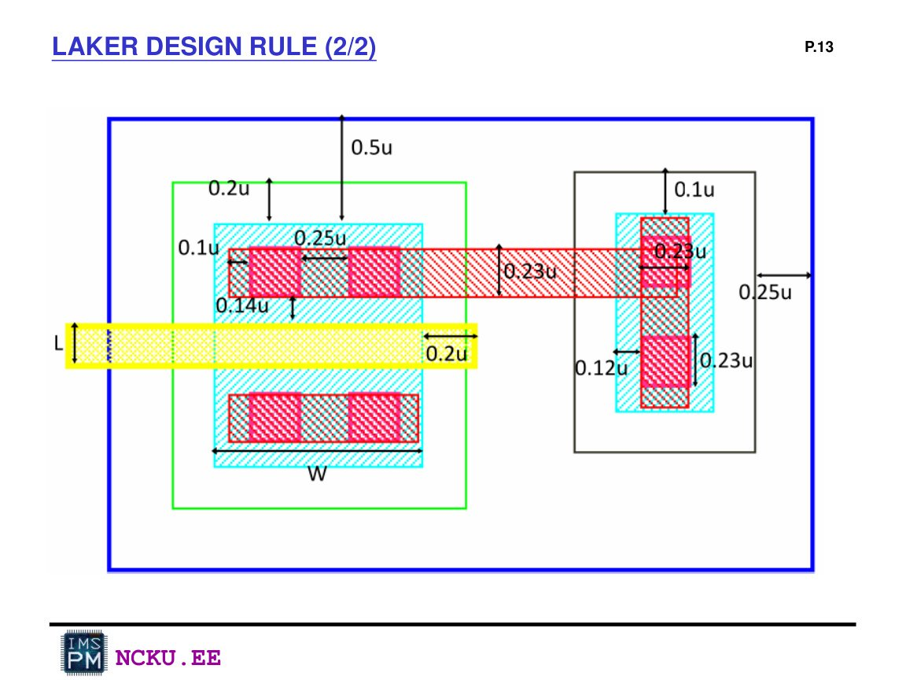
Design rule 圖示：layout 中 width、space、overlap、extension 都要符合規則。
畫 NAND / NOR 時注意：pin name 必須和 SPICE 文件一致，例如 A、B、C、D、out_2、out_3、vdd、gnd。Pin 名稱不一致會造成 LVS 錯誤。
二、DRC：Design Rule Check
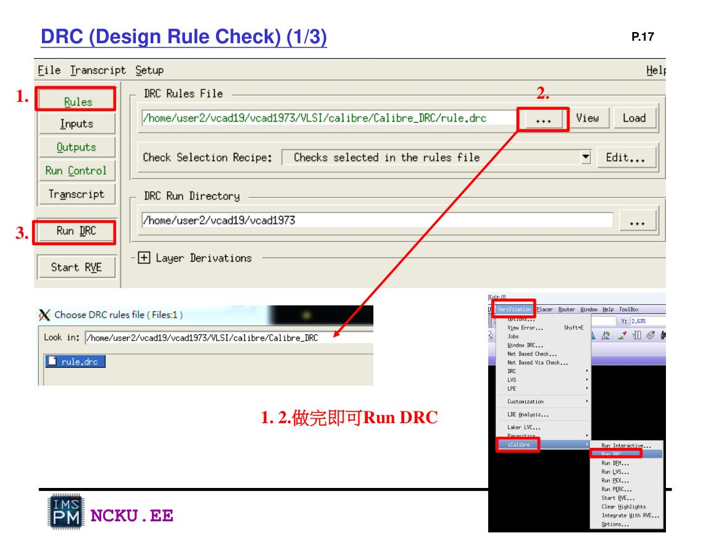
DRC 執行：選 rule.drc，設定 run directory，按 Run DRC。
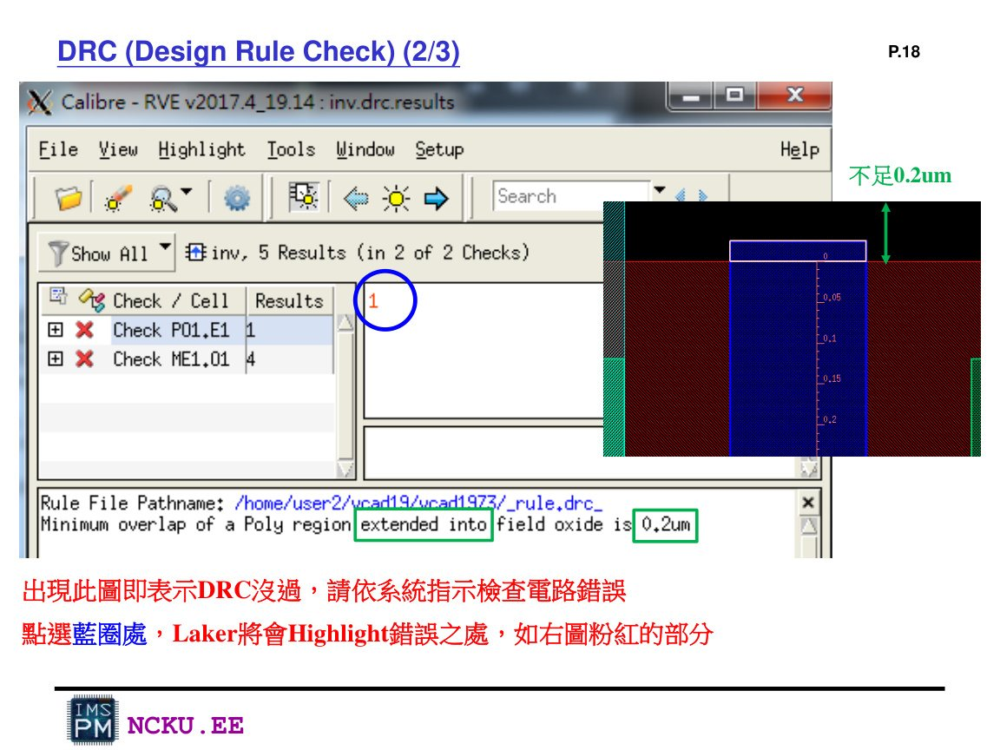
DRC fail：Calibre 會列出錯誤，Laker 會 highlight 違規位置。
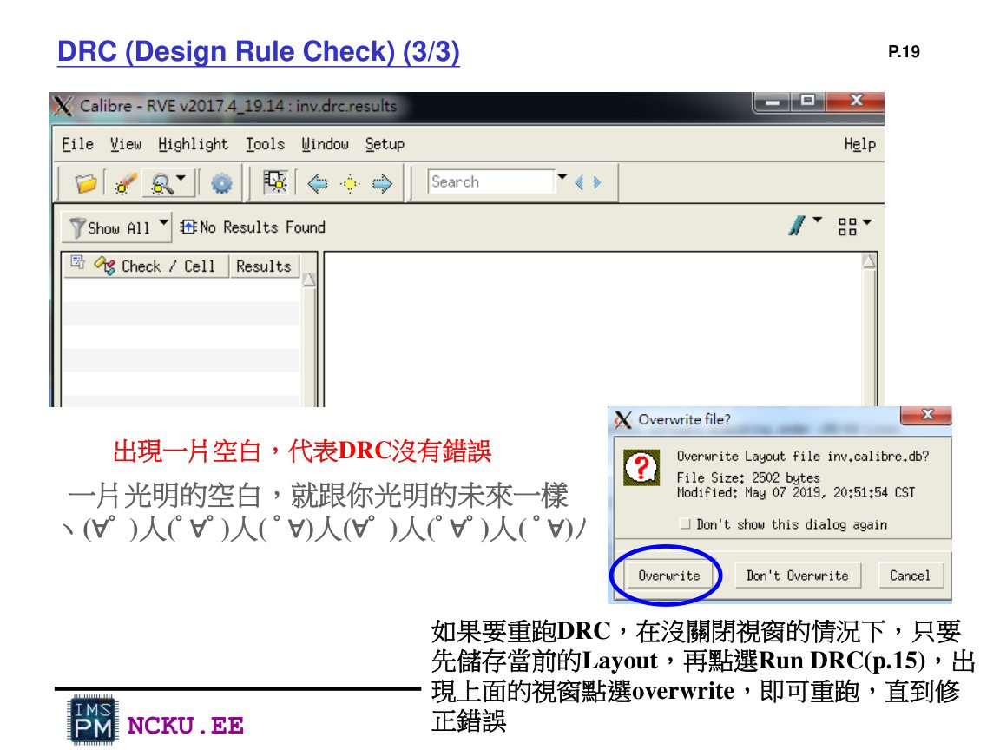
DRC pass：結果視窗空白表示沒有錯誤，可截圖放報告。
三、LVS：Layout Versus Schematic
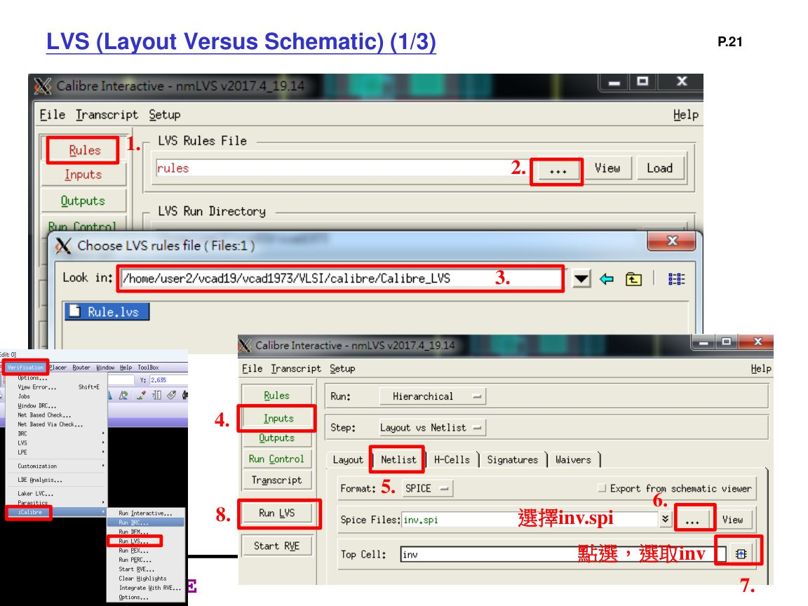
LVS 執行：選 rule.lvs，指定 layout netlist 與 spice file。
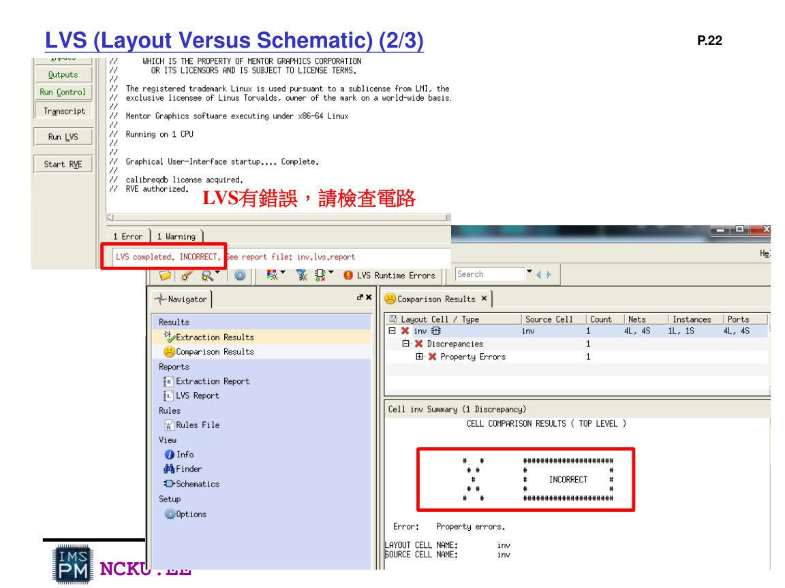
LVS fail：通常是 pin name、subckt name、元件數量或連線不一致。
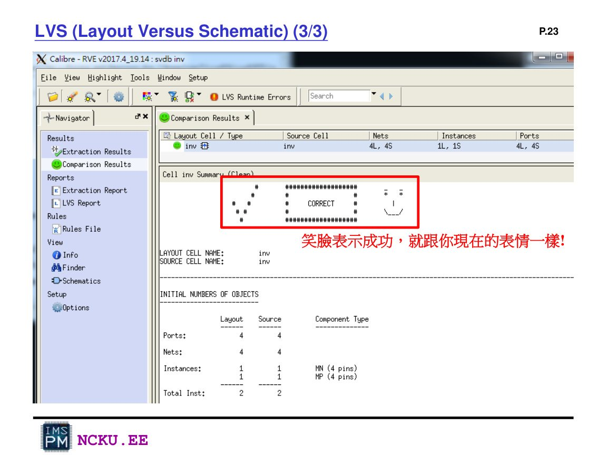
LVS pass：笑臉 / CORRECT 表示 layout 與 schematic 一致。
四、PEX：Parasitic Extraction
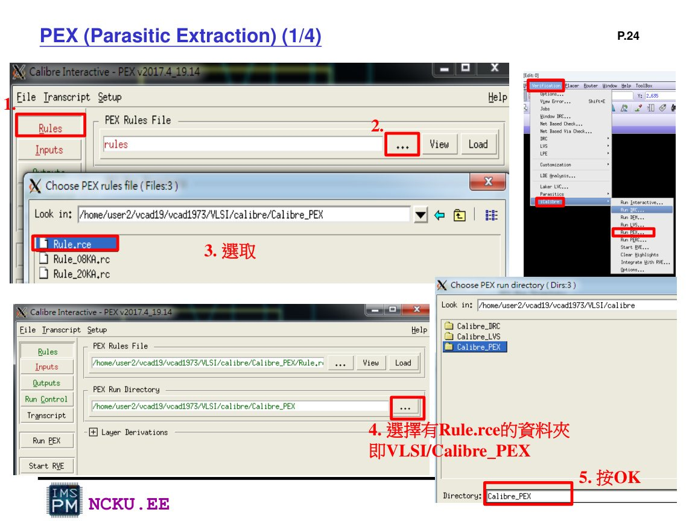
PEX rule 設定：選 Rule.rce，設定 PEX run directory。
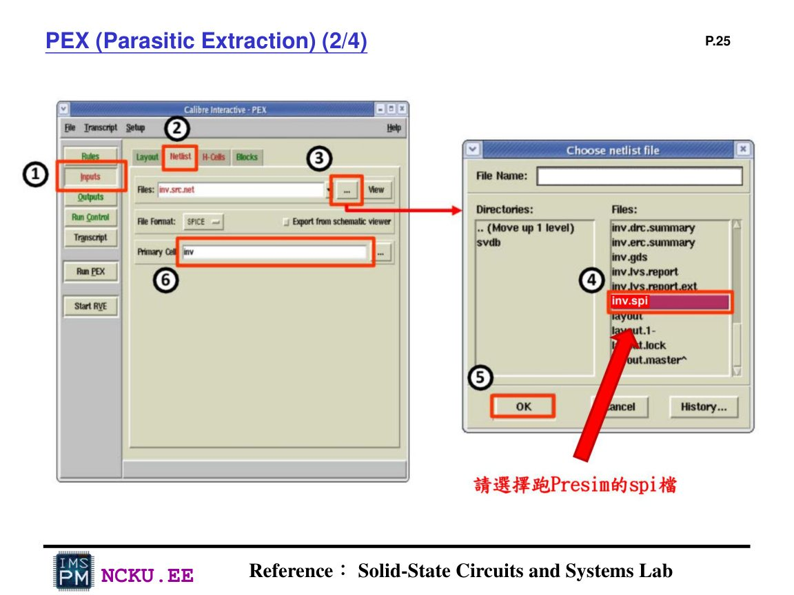
PEX input：選擇通過 DRC/LVS 的 spice file。
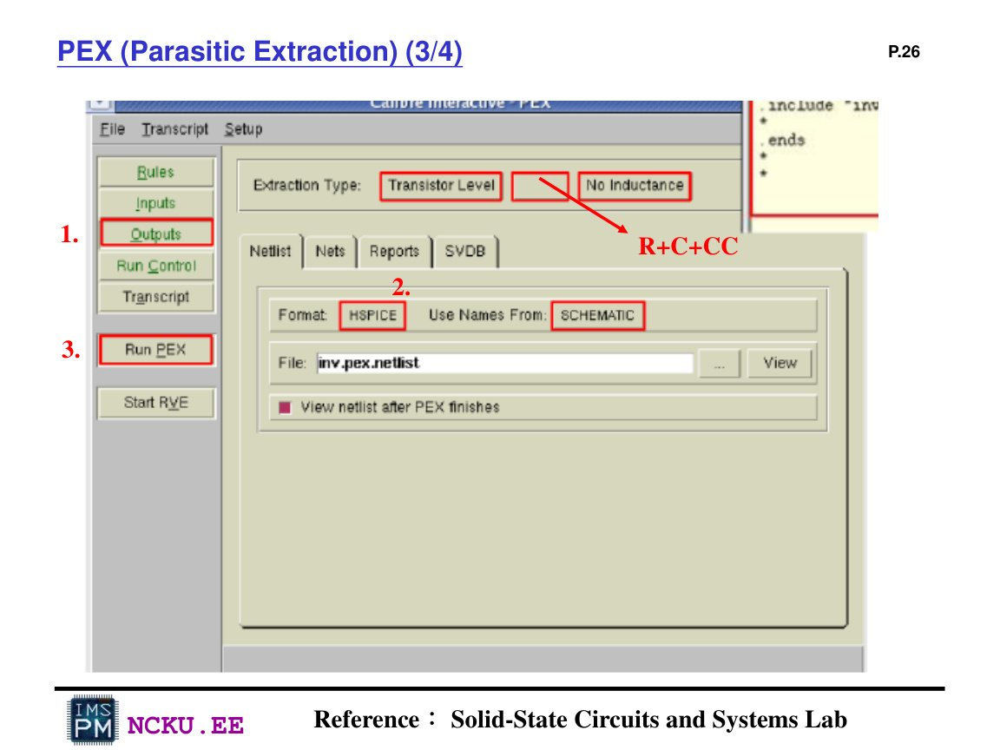
PEX output：格式選 HSPICE，Extraction Type 選 Transistor Level / R+C+CC。
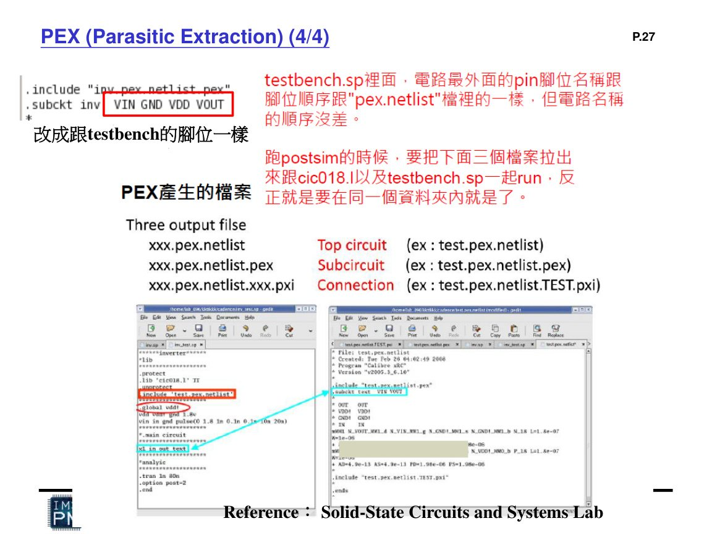
PEX 後需確認 subckt 腳位順序與 testbench 相同。
五、常見錯誤排除
| 錯誤 | 可能原因 | 修正方式 |
|---|---|---|
| DRC spacing error | PO1、DIFF、Metal 間距太近 | 用 d 量距，拉開到規則以上 |
| LVS pin mismatch | layout pin 名稱與 SPICE 不同 | 確認 pin text 完全一致，大小寫雖多半不敏感，但建議一致 |
| LVS device mismatch | PMOS / NMOS 數量、W/L 或串並聯錯 | 對照 NAND / NOR schematic 重畫或修改 |
| PEX netlist 無法跑 | .include、subckt 腳位、模型路徑錯 | 修正 post-sim testbench 與 PEX 檔腳位 |